教育经历
硕士学位 · 土木工程与建筑学院
武汉理工大学 (Wuhan University of Technology)
Master Program, School of Civil Engineering and Architecture
学士学位 · 土木工程学院
南京林业大学 (Nanjing Forestry University)
Bachelor Program, College of Civil Engineering
研究方向
研究生阶段 — 与各向同性连续体等价的附加体积约束晶格弹簧模型及其在断裂模拟中的应用研究（指导教师：李冬明 副教授）
晶格弹簧模型（LSM）以离散弹簧网络模拟连续体力学行为，天然适合断裂模拟。但自 Hrennikoff (1941) 以来，经典 LSM 模拟各向同性介质时泊松比被锁定（平面应力 ν=1/3，平面应变 ν=1/4）。现有改进方案普遍以增加自由度或降低物理直观性为代价。本课题提出各向同性弹性晶格弹簧模型（IELSM），以附加体积约束修正应变能，实现全范围可调泊松比并与标准 FEM 无缝兼容。选题来源于国家自然科学基金，英文论文已撰写（导师一作，本人二作）。

图形摘要：IELSM 整体研究框架与核心创新
研究点一：经典 LSM 的泊松比约束根源与新模型提出
从应变能密度角度揭示 LSM 泊松比固定的本质——轴向弹簧单一本构导致体积模量 K⁰ 与剪切模量 G 耦合。提出 IELSM：在总应变能中引入附加体积模量 kv，直接修正体积变形刚度，实现两弹性参数的独立调控。导出 kn、kv 到宏观弹性常数 (E, ν) 的精确解析映射。
覆盖平面应力 −1<ν<1 与平面应变 −1<ν<0.5 全范围可调泊松比；kv=0 时退化回经典 LSM；严格满足应变能旋转不变性；不增加节点自由度，保持 LSM 计算高效的优势。

Fig.1：经典 LSM 轴向弹簧

Fig.2：IELSM 代表性体积单元

Fig.3：kv 调节机制

Fig.4：RVE 变形示意

Fig.5：附加体积约束的数值离散化 — 等效分解为 10 个标准力学组件
研究点二：数值离散化与有限元框架嵌入
将附加体积约束的 8×8 刚度矩阵精确等效分解为 10 个标准力学组件——轴向弹簧、剪切弹簧与转动弹簧的组合。通过直接刚度法实现全局装配，统一 LSM 体系与 FEM 标准流程。推导线性/双线性两种位移场假设下的应变-位移矩阵，开展特征值分析与总势能对比评估数值精度与稳定性。
IELSM 在泊松比全范围内刚度矩阵正定，有效抑制 CST 寄生剪切锁死和 Q4 沙漏零能模式。平面应力 ν>0.6 或平面应变 ν>0.375 时，IELSM 精度超越 Q4——因高泊松比下 Q4 出现零能模式退化而 IELSM 保持稳定。

Fig.6(a)(b)：刚度装配

Fig.6(c)：转动弹簧装配

Fig.7：应变场计算方法

Fig.9：边界条件

Fig.10(a)：平面应力总势能

Fig.10(b)：平面应变总势能

Fig.19：简支梁四种数值模型的离散化方案对比（IELSM / Q4 / CST-1 / CST-2）

Fig.20：简支梁底部竖向位移 — 6 种数值模型与 Euler-Bernoulli 解析解对比
研究点三：基准算例验证与断裂模拟应用
通过 6 类经典基准算例全面验证 IELSM 的计算性能：①单轴拉伸（含 4 种随机角度网格旋转验证各向同性）与纯剪切；②简支梁弯曲（与 FEM-Q4、FEM-CST 结构化/非结构化、线性/高阶 DLSM 共 6 方案对比）；③无限大板圆孔应力集中（全场 σxx/σyy/τxy 与解析解对比）；④无限大板中心裂纹与有限板十字形裂纹（与 FEM-Q4 等自由度对比全场位移与应力分布，计算裂尖应力强度因子）。
① 高精度：单轴拉伸/纯剪切各泊松比（0.01~0.49）下与解析解完全吻合；梁弯曲误差 2.9%，优于 DLSM 和结构化 CST，与 FEM-CST 非结构化网格精度相当。② 严格各向同性：4 种随机网格旋转角度下横向收缩与总应变能与方向无关，能量偏差 ≤3.3%。③ 高效计算：梁弯曲求解仅 1.1ms（Q4 的 1/5），半带宽窄（105 DOFs），存储与求解开销低。④ 断裂模拟能力：裂尖应力场准确捕捉 1/√r 奇异性；中心裂纹与十字形裂纹在较粗网格下 SIF 即稳定收敛，全场位移与 ABAQUS 参考解一致。

Fig.15(c)：最不利构型应变能密度相对误差分布（tanθ=0.25, ν=0.49）

Fig.23(c)：不同网格密度下 IELSM 应力收敛性验证

Fig.22：圆孔板 IELSM 网格布置

Fig.24(b)1：圆孔板位移场 — IELSM 线性位移场
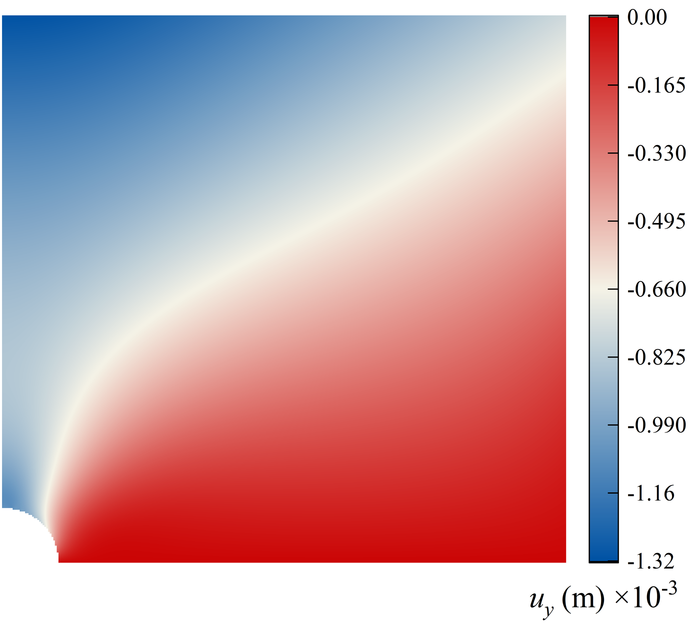
Fig.24(b)2：圆孔板位移场 — IELSM 双线性位移场
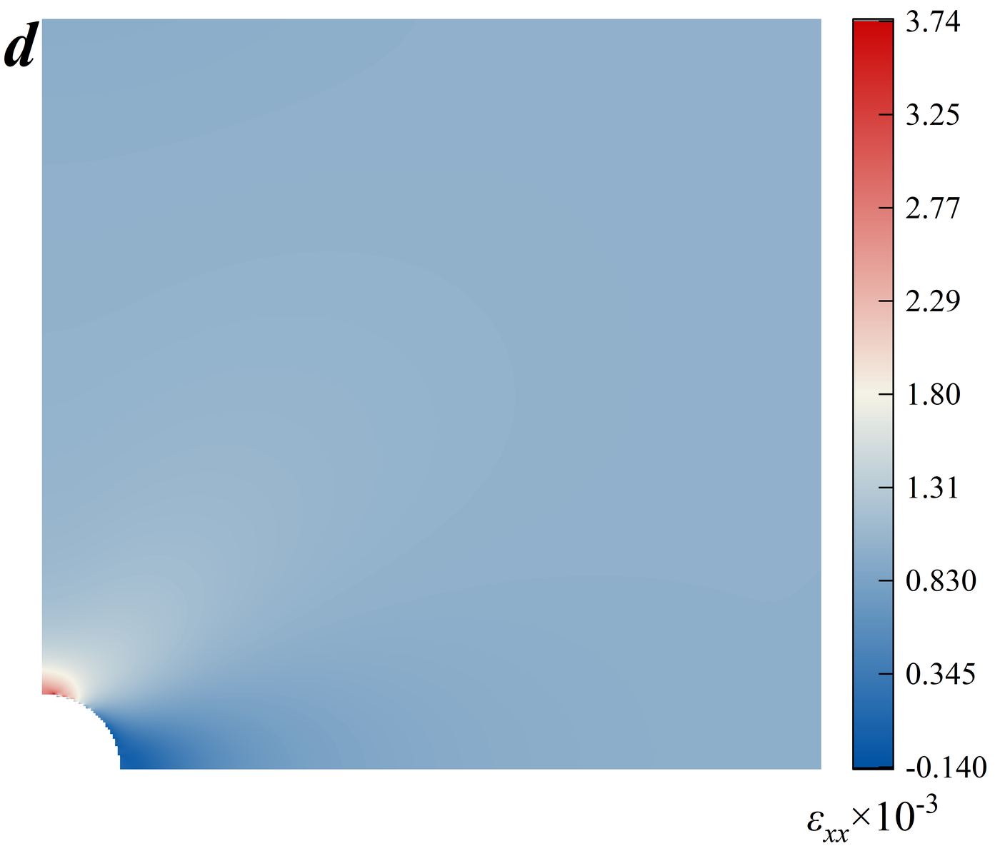
Fig.25(d)1：圆孔板应变场 — IELSM 双线性位移场
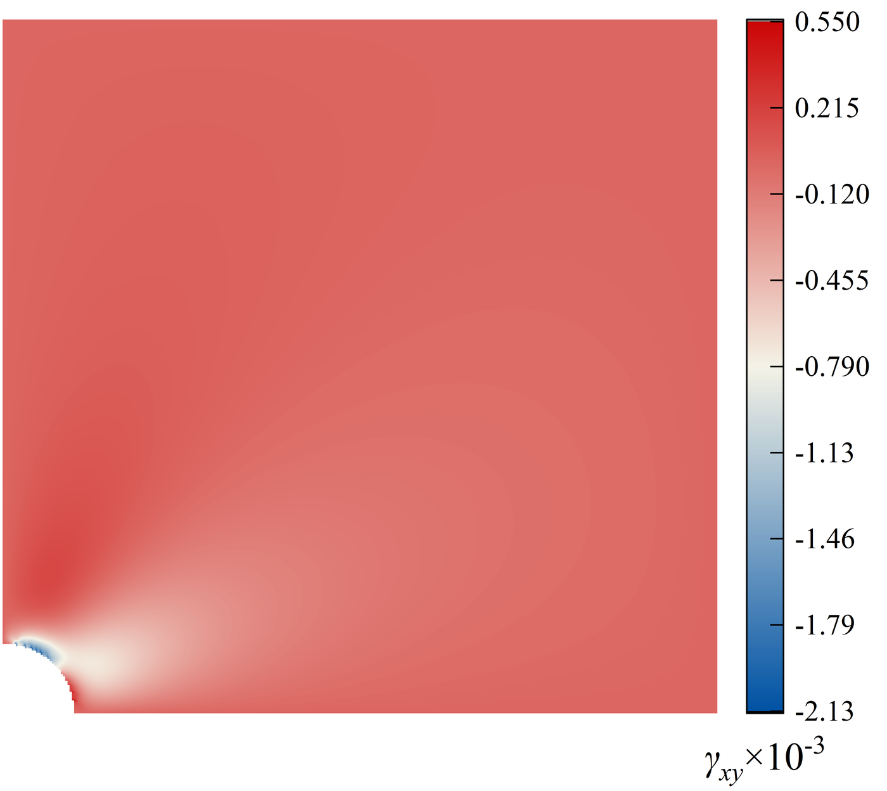
Fig.25(d)2：圆孔板应变场 — IELSM 双线性位移场
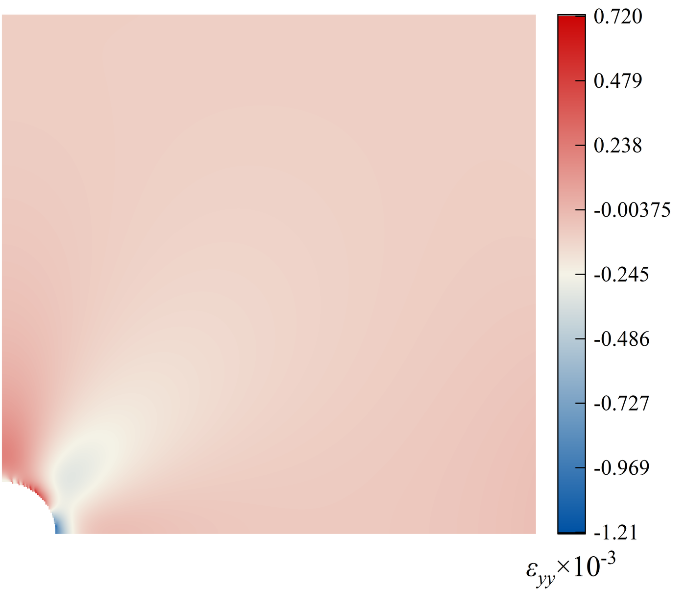
Fig.25(d)3：圆孔板应变场 — IELSM 双线性位移场
本科阶段 — 单层球面网壳结构考虑建模不确定性的地震易损性研究（指导教师：张延泰 副教授）
空间网壳结构广泛应用于大型公共建筑与工业设施，一旦在地震中破坏或倒塌将造成严重损失。本课题以施威德勒型单层球面网壳结构为对象，围绕"损伤评估→指标选取→不确定性量化"的递进逻辑，建立了系统的地震易损性分析框架。成果发表于 Structures（2024，doi:10.1016/j.istruc.2024.106671）与 Soil Dynamics and Earthquake Engineering（2025，doi:10.1016/j.soildyn.2025.109694）。
研究点一：近场与远场地震下网壳结构损伤演化与多指标评估
基于 OpenSees 建立三种矢跨比（0.20、0.25、0.30）的 Schwedler 型单层球面网壳纤维单元模型，从 PEER 数据库选取近场脉冲型（30 条）与远场地震动（30 条），采用多条带分析法（MSA）在 7 个地震强度水平（0.2g~2.0g）下进行非线性动力时程分析。引入多指标地震损伤评估模型——综合节点最大位移、平均塑性应变、1P 与 8P 杆件比例四项响应指标，标准离差法客观赋权（ω₁~ω₄），重新界定 DS₁~DS₅ 损伤状态及 LS1~LS4 四个极限状态阈值（0.10/0.35/0.70/0.95）。
远场地震塑性发展更深但最大节点位移增幅较小，近场脉冲对节点位移影响更大；矢跨比越大，LS2~LS4 严重损伤状态下的中值强度越高，表明抗震能力增强；同矢跨比下远场地震破坏大于近场脉冲型地震，与"近场更具破坏性"的传统认知相反，归因于网壳结构良好的延性。多指标评估模型克服了单指标"同一结构、不同结论"的矛盾，矢跨比增大时杆件塑性权重自动增大、节点位移权重减小。

图2-1：三种矢跨比 Schwedler 型单层球面网壳有限元模型及动力特性
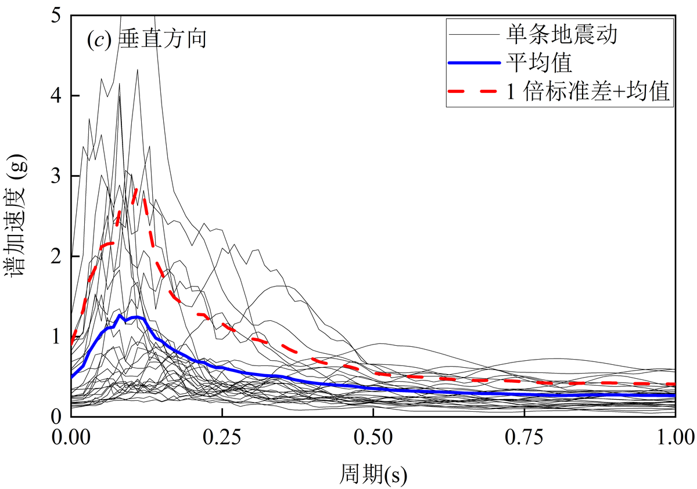
图2-2(c)：远场地震动三向加速度反应谱（阻尼比 5%）

图2-4(a)：近场 dmax-塑性比例

图2-4(b)：远场 dmax-塑性比例

图2-5(a)：近场 1P 杆件比例

图2-5(b)：远场 1P 杆件比例
研究点二：地震动强度指标的适用性评价与优化选取
引入 AMV、GMV、SRSS 等 7 种三向地震动强度表征方式，系统比较 Sa(T₁) 及其 13 种改进型组合强度指标在 LS1~LS4 四个损伤极限状态下易损性分析的有效性与充分性。分析任意振动周期的 IM-损伤相关性，评估软化周期与高阶振型对 IM 适用性的影响，提出考虑高阶振型影响的改进指标 IMn 并确定最优组合周期数。
地震损伤极限状态、IM 表征方法与地震类型三者均会显著影响 IM 指标的适用性排序。考虑高阶振型影响的组合型 IM 在近场地震的四个损伤极限状态下均保持最低的地震动变异性，且对周期组合不敏感，即使使用非最优组合仍具有较高适用性。据此建议网壳结构采用 IM₁₂₃ 进行地震易损性分析。

图3-1(a)：近场 LS1 下各 IM 指标有效性对比

图3-1(b)：近场 LS2 下各 IM 指标有效性对比
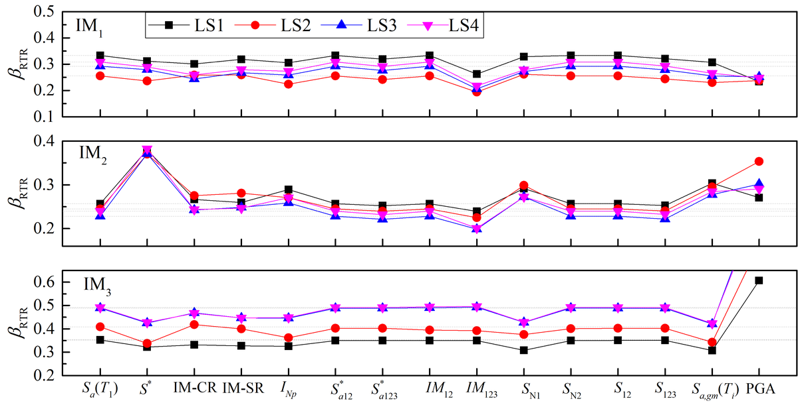
图3-3(a)：任意振动周期的 IM-损伤相关性分析
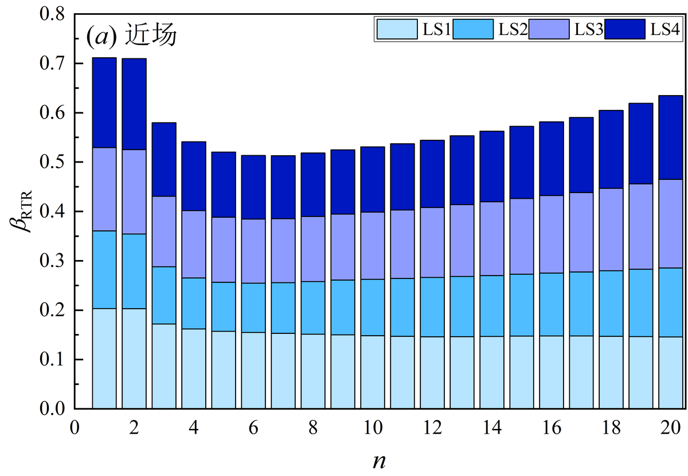
图3-7(a)：考虑高阶振型的最优组合周期项数确定
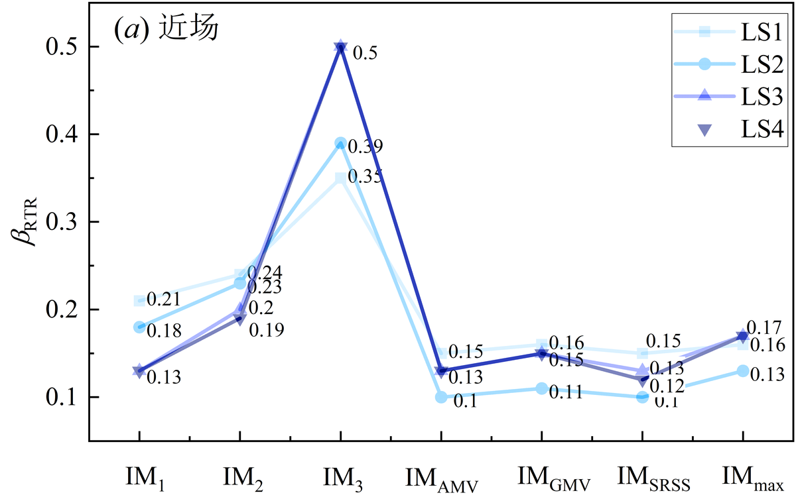
图3-8(a)：最优 IM 在 LS1~LS4 下的充分性验证
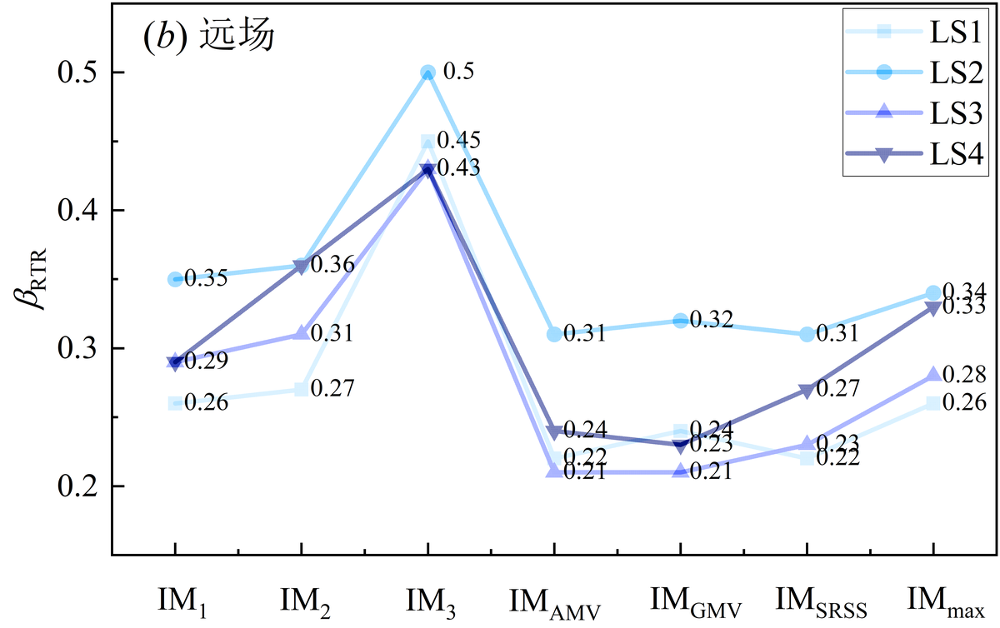
图3-8(b)：最优 IM 在不同地震类型下的适用性
研究点三：基于拉丁超立方抽样的建模不确定性量化与倒塌风险评估
以近场脉冲型地震动为例，基于拉丁超立方抽样（LHS）从一个初始模型建立若干随机结构模型样本，对初始模型与每个随机模型施加同组地震动以分离地震动不确定性与建模不确定性。采用一次二阶矩法（FOSM）对阻尼比、钢材屈服强度、结构几何参数等进行灵敏度分析。最后给出考虑建模不确定性的 LS1~LS4 四个极限状态年倒塌概率。
当使用合适的三向 IM 表征方式时，建模不确定性随结构损伤加剧而增大，占总不确定性比例也相应上升；若使用不合适的表征方式，可能会低估建模不确定性。阻尼比和钢材屈服强度对易损性曲线中值强度的影响最为显著。多指标损伤评估模型能有效反应结构参数变化，通过自适应调整各响应指标权重来反映抗震性能变化。
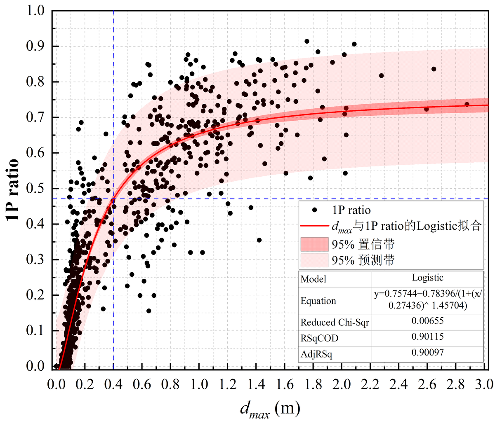
图4-1：基于拉丁超立方抽样的建模不确定性分析流程
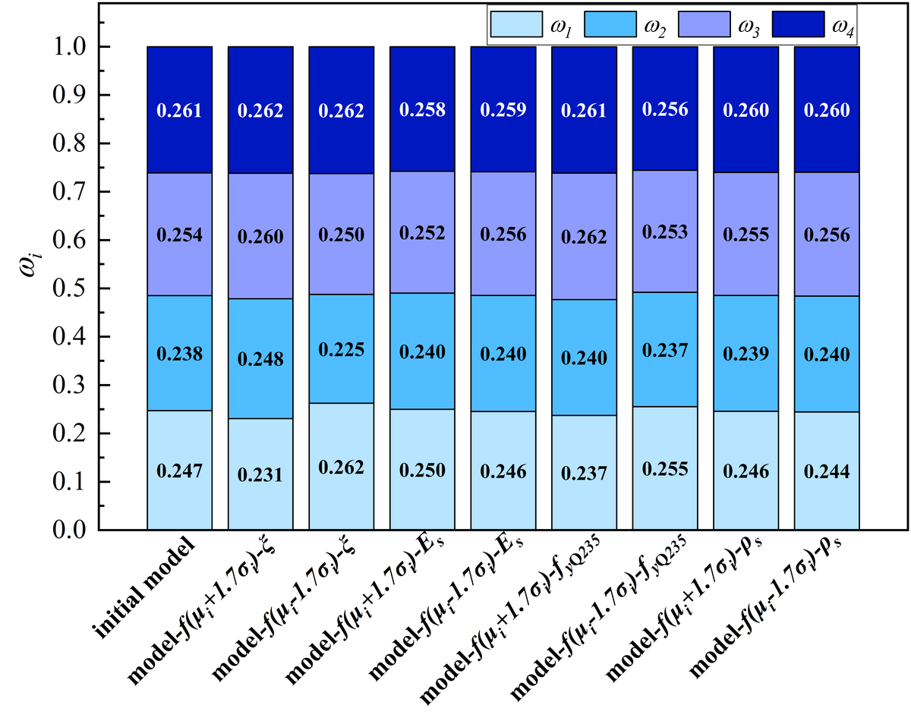
图4-12：考虑建模不确定性的年倒塌风险
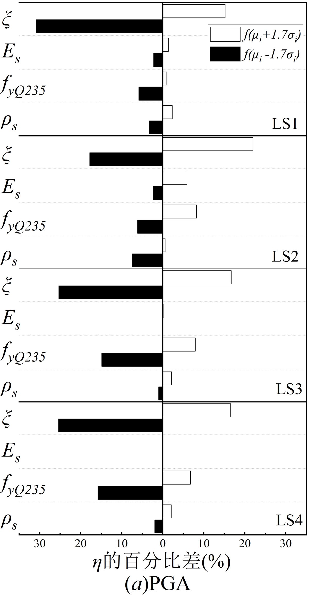
图4-17(a)：建模参数灵敏度分析（近场）
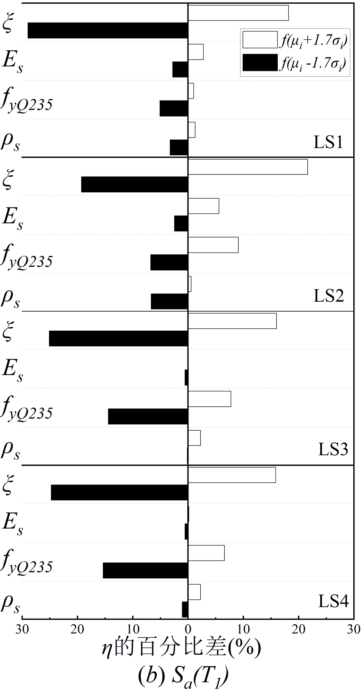
图4-17(b)：建模参数灵敏度分析（远场）
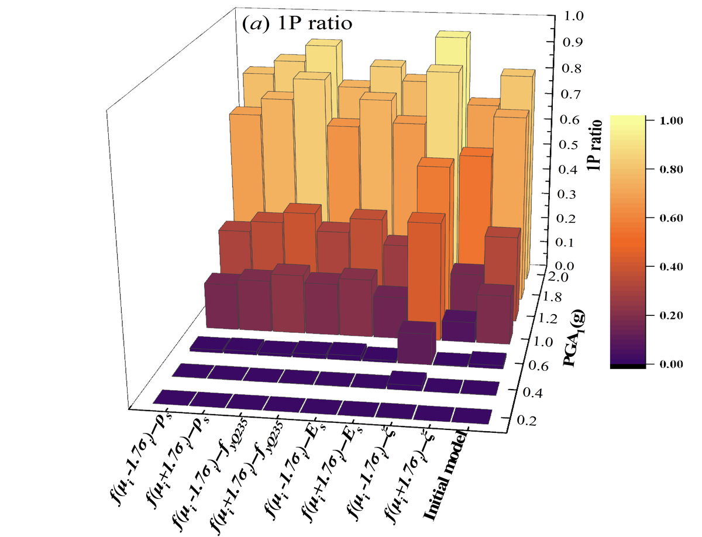
图4-18(a)：初始模型与各随机变量模型在七个地震动强度下杆件的平均塑性比例（近场）
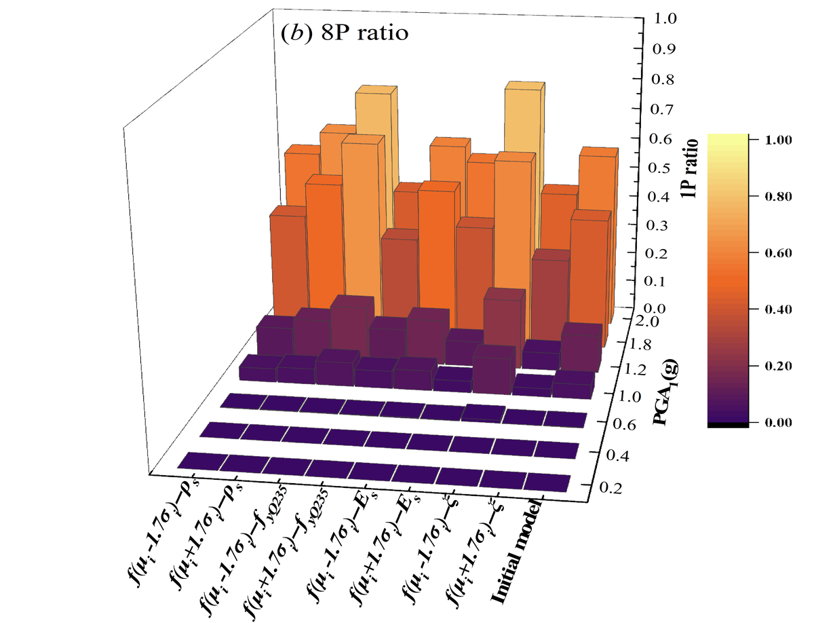
图4-18(b)：初始模型与各随机变量模型在七个地震动强度下杆件的平均塑性比例（远场）
科研成果
期刊论文
Seismic vulnerability analysis of single-layer lattice shells with different rise-to-span ratios: focusing on the selection of Sa(T₁)-based intensity measures
Structures, 2024, 65: 106671
DOI 🔗专利
—— 专利名称 ——
专利号：CN202210972248.9 · 2022-11-04
—— 专利名称 ——
专利号：CN202222132375.6 · 2023-03-24
荣誉奖项
2024
- —— 荣誉/奖项名称 ——
2023
- —— 荣誉/奖项名称 ——
2022
- —— 荣誉/奖项名称 ——
2021
- —— 荣誉/奖项名称 ——